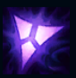
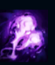
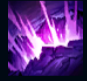
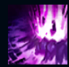

Vel'Koz
| Vel'Koz The Eye of The Void | |
|---|---|
| Release date | 27.02.2014 |
| Class | Artillery |
| Positions | Middle,Support |
| Resource | Mana |
| Range type | Ranged |
| Adaptive type | Magic |
| Base statistics | |||
| Health | 520 – 2016 | Mana | 469 – 826 |
| Health regen. | 5.5 – 14.85 |
Mana regen. | 8 – 21.6 |
| Armor | 22 – 81.5 | Attack damage | 55 – 108.41 |
| Magic resist. | 30 – 38.5 | Crit. damage | 175% |
| Move. speed | 340 | Attack range | 525 |
Nimeni nu știe dacă Vel'Koz a fost prima creatură din Vid care a ajuns în Runeterra, dar ceva e sigur: nicio altă ființă nu-i poate egala cruzimea și răceala cu care judecă. În timp ce rasa lui devorează și pângărește tot ce prinde, el caută să studieze tărâmul fizic – și pe ființele războinice stranii ce trăiesc acolo – pentru a descoperi punctele slabe pe care Vidul le-ar putea exploata. Cu toate astea, Vel'Koz nu e un observator pasiv, nici pe departe: când e amenințat, răspunde cu jeturi de plasmă letală și poate tulbura însăși structura lumii. |  |
DECONSTRUCȚIE ORGANICĂ Abilitățile lui Vel'Koz aplică la impact un cumul de ''Deconstrucție organică''. Dacă inamicul are 3 cumuluri, va suferi daune reale. |
||
|---|---|---|---|---|
 |
FISIUNE PLASMATICĂ Vel'Koz lansează un fulger de plasmă care se desparte în două la reactivare sau la lovirea unui inamic. La impact, fulgerul încetinește și provoacă daune. |
|||
 |
RIFTUL VIDULUI Vel'Koz deschide un rift spre Vid care provoacă daune, apoi explodează după un timp și le provoacă din nou daune unităților din el. |
|||
|  |
DISRUPȚIE TECTONICĂ Vel'Koz face o zonă să explodeze, aruncând în aer inamicii și proiectându-i pe cei din apropiere pe o mică distanță. |
|||
 |
RAZĂ DEZINTEGRATOARE Vel'Koz dezlănțuie o rază de energie care urmează cursorul timp de 2,5 secunde, provocând daune magice. ''Deconstrucția organică'' cercetează campionii inamici, care vor primi daune reale în loc de daune magice din această abilitate. |